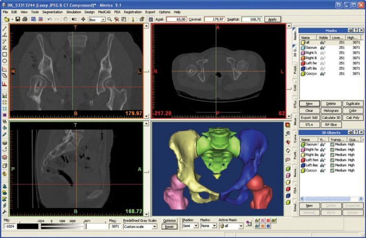
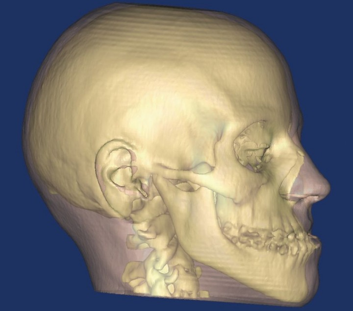
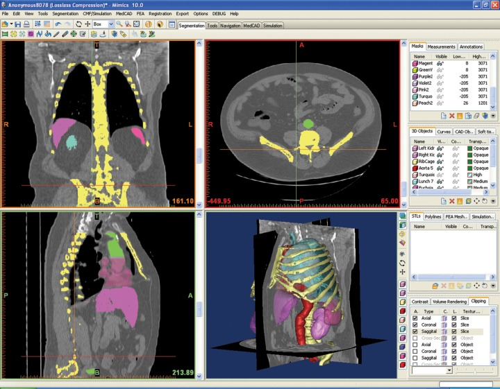

|
MIMICS
Materialise firmasýnýn Ýnteraktif Týbbi Görüntü Kontrol Sistemi - Hýzlý Prototipleme, STL ve CAD - Bilgisayar Destekli Tasarým yazýlýmý ve 4C Medikal'in Türkiye temsilcisi olduðu MIMICS, 2 boyutlu bilgisayarlý tomografi (BT) ve MRI datalarýný 3 boyutlu hale getiren, en ince detaylarý kolayca görüntüleyebilen, bir çok medikal uygulamaya öncülük eden interaktif bir bilgisayar programýdýr.
Ayrýca; diðer 3 boyutlu radyografik cihazlarýn elde edemediði 3 boyutlu dýþ yüzey görüntülerini saðlayan, özellikle çocuk hastalarýn tomografi ve benzeri cihazlardan kaynaklý yüksek radyasyona maruz kalmalarýný engelleyen, 3dMD þirketinin geliþtirdiði 3dMD Görüntüleme Sistemi'nden elde edilen 3 boyutlu canlý bedenine ait dýþ yüzey verileri üzerinde çalýþmak da Mimics ile mümkün olmaktadýr.
Metal kalýplarýn, dolgu ve köprü preparasyonlarýnýn, diþ izlerinin/negatiflerin, mumlarýn ve alçý kalýplarýn 3B görüntülemelerin sanal ortamda çok hassas þekilde oluþturmak için tasarlanmýþ 3B tarayýcýlardan elde edilen veriler de Mimics' de kullanýlmaktadýr.

Büyük resim için týklayýnýz
MIMICS, Temel Modül, Simülasyon Modülü, STL+ modülü, Sonlu Elemanlar Analizi - FEA Modülü, Hýzlý Prototipleme için Kesit - RP Slice, MEDCAD Modülü ve IMPORT modülü olmak üzere toplam 7 modülden oluþmaktadýr. Bu modüler yapýsý sayesinde MIMICS birçok medikal uygulama için kullanýlabilir. Hekim ve araþtýrmacýlar yapacaklarý uygulama ya da çalýþmaya uygun bir modüler yapý oluþturabilirler. Ayrýca MIMICS, tüm hýzlý prototip sistemlerine data aktarabilir.

MODÜLLER
TEMEL MODÜL:
MIMICS'in en önemli özelliði, Hounsfield deðerlerini kullanarak segmentasyon yapan bir program oluþudur. Sayýsýz 2 boyutlu kesitle çalýþabilir. Oluþturulan görüntü iþleme arayüzü, birçok segmentasyon ve görsel araç saðlamaktadýr.
Hounsfield Deðerleri: BT'de her bir vokselde (Piksel ile kesit kalýnlýðý çarpýlarak elde edilen dikdörtgen prizma olan voksel, BT deki birim hacim elemanýdýr ve pikseldeki görüntünün temelinde voksele ait veriler bulunmaktadýr.) hesaplanan X-ýþýný zayýflatma deðerini standart bir deðer ile belirtmek amacýyla, Hounsfield (cihazý geliþtiren Ýngiliz fizikçinin adý) skalasý olarak adlandýrýlan bir referans sistemi kullanýlmaktadýr. Hounsfield skalasýnda x-ýþýný emilim deðerleri -1000 ve 1000 arasýnda 2000 birim içerisinde sýnýflandýrýlmýþtýr. Bu skalaya göre suyun Hounsfield deðeri sýfýr, kemik gibi çok yoðun oluþumlar için bu deðer 1000, hava için -1000 olarak kabul edilmiþtir. Yað dýþýndaki yumuþak dokular 30-100 arasýnda Hounsfield deðerine sahipken, yað dokusu BT'de -60 ile -200 arasýnda deðerler alýr.
Segmentasyon Araçlarý: Mimics'de ilgilenilen bölgeyi ön plana çýkarmak için segmentasyon maskeleri kullanýlýr. Mimics, farklý sayýda segmentasyon maskeleri kullanarak görüntülerle iþlem yapmanýza olanak tanýr. Bu maskeleri oluþturmak ve modifiye etmek için segmentasyon araçlarý kullanýlýr.
Görselleþtirme ve Ölçme Araçlarý
Görselleþtirme: Orijinal axial görüntü, bu kesitlerin üst üste konulmasýyla oluþan koronal ve sagital görüntüler olmak üzere Mimics ekraný üç parçaya böler. Mimics, kontrast artýrma, çevirme, yakýnlaþtýrma ve rotasyon gibi görselleþtirme araçlarýna sahiptir.

Büyük resim için týklayýnýz
3 Boyutlu Rendering ve Boyutlandýrma: Mimics, ilgilenilen bölgenin 3boyutlu modelini kolayca üretmek için esnek bir arayüz saðlar. Böylece çözünürlük ve filtreleme parametrelerini ayarlayabilirsiniz.
Reslicing: Ýki reslicing aracý bulunur: on-line reslicing aracý ve export resliced proje aracý. On-line reslicing aracý sayesinde ortogonal olan ve aksiyal görüntü üzerinde kullanýcý tarafýndan çizilmiþ olan cross-sectional ve paralel çizgileri görüntüleyebilirsiniz. Export resliced proje aracý, kullanýcý tarafýndan çizilmiþ bir çizgi üzerinden bir resliced Mimics projesi export etmenizi saðlayan kolay kullanýlan bir arayüze sahiptir.
Ölçme Ýþlemleri: Noktadan - Noktaya, Profil Çizgisi ve Gri Deðer Ölçümü ve Yoðunluk ölçümleri, kalýnlýk ölçümleri olarak ayrý ayrý yapýlabilmektedir. Ayrýca ölçme iþlemlerinize etiket ekleyebilir, tüm görüntülerin bulunduðu tam bir rapor hazýrlayabilir ve proje yönetimi yardýmý sayesinde çalýþmalarýnýzý en iyi þekilde düzenleyebilirsiniz.

IMPORT Modülü
Import: Mimics, CT, MRI veya Microscopy datasý gibi 2 boyutlu sýkýþtýrýlmamýþ görüntüleri geniþ çeþitlilikte import eder. Bunun yaný sýra kullanýcý-tanýmlý import aracý da bulunmaktadýr. Import yazýlýmý, tescilli optik disklerde ve teyplerde kaydedilmiþ olan görüntülere ulaþabilir, görüntüleri Materialise görüntü formatýna çevirir ve ileride yapýlmasý muhtemel çalýþmalar için bilgileri saklar.
STL+ Modülü
Mimics STL+ Modülü, üçgenleþtirilmiþ dosyalar aracýlýðýyla, Mimics ile diðer hýzlý prototipleme (RP) sistemleri arasýnda bir köprü kurar. Bu dosyalar, RP modelinin çözünürlüðünü arttýrmak için doðrusal ve düzlemsel algoritma hesaplama yöntemiyle oluþturulurlar.
Export Formatlarý: STL formatý tüm hýzlý prototipleme sistemleri tarafýndan kullanýlabilir. Diðer export formatlarý ise ASCII STL, Binary STL, DXF, VRML 2.0 ve Point Cloud' dur
Hesaplama Parametreleri
3 boyutlu objelerde pürüzsüzleþtirme yapmak için, export edilmiþ dosyalarýn üçgen
sayýlarý azaltýlabilir. Üçgenlerin sayýsýný azaltmada kullanýlan iki yöntem vardýr: matris redüksiyonu ve üçgen redüksiyonu. Görüntüleri hesaplamak ve 3boyutlu mesh üretebilmek için baþka iki yöntem daha vardýr: Grey Value hesaplamasý ve contour hesaplamasý.
|
Mesh üzerindeki üçgenler azaltýlmadan önce |
Mesh üzerindeki üçgenler azaltýldýktan sonra |
|